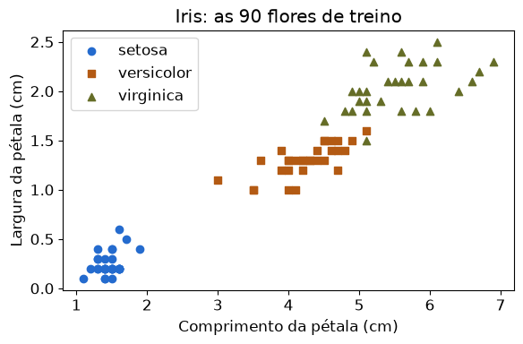
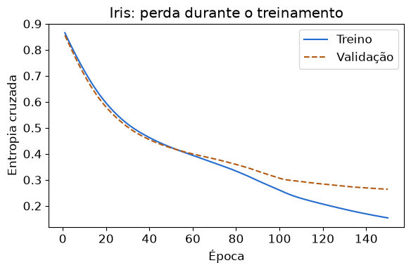
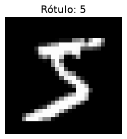
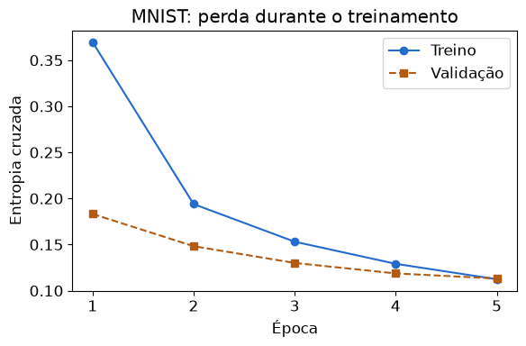
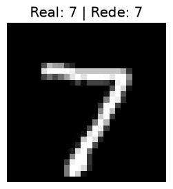
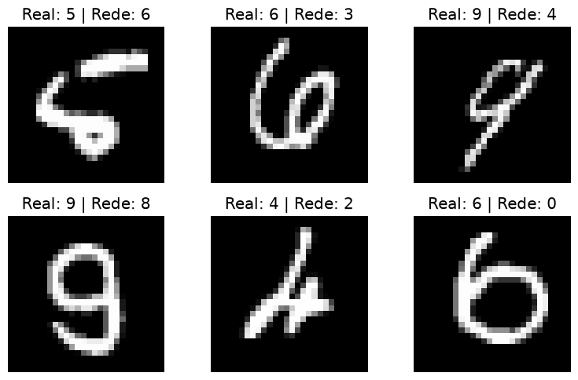

Física Computacional · PRCCOMP · Prof. Gustavo Voltani von Atzingen · IFSP Piracicaba
Na aula de introdução ao aprendizado de máquina, calculamos a saída de um neurônio, medimos o erro e corrigimos os pesos. Agora vamos usar o TensorFlow para os cálculos e o Keras para montar e treinar redes em camadas.
O objetivo é classificar flores a partir de quatro medidas e dígitos a partir dos pixels de uma imagem. Nos dois casos, usamos redes densas, com uma camada escondida. As células são sequenciais: execute de cima para baixo.
Preparação
No Google Colab, abra este notebook e execute as células com Shift+Enter. Uma sessão de CPU é suficiente. Para rodar localmente, use Python 3.12 e instale:
python -m pip install tensorflow scikit-learn matplotlib notebook
python -m notebook
O Iris vem com o scikit-learn; o MNIST será baixado na primeira execução. O arquivo já contém os resultados de uma execução, que podem ser lidos sem treinar novamente. A semente abaixo ajuda a repetir o experimento; versões e equipamentos diferentes ainda podem produzir pequenas diferenças.
Célula 1
import tensorflow as tf
from tensorflow import keras
import matplotlib.pyplot as plt
from sklearn.datasets import load_iris
from sklearn.model_selection import train_test_split
keras.utils.set_random_seed(42)
plt.rcParams.update({"figure.figsize": (6, 4), "font.size": 12})
print("TensorFlow:", tf.__version__, "| Keras:", keras.__version__)Mensagens do ambiente
WARNING: All log messages before absl::InitializeLog() is called are written to STDERR I0000 00:00:1792791585.406296 1338475 port.cc:153] oneDNN custom operations are on. You may see slightly different numerical results due to floating-point round-off errors from different computation orders. To turn them off, set the environment variable `TF_ENABLE_ONEDNN_OPTS=0`. I0000 00:00:1792791585.406572 1338475 cudart_stub.cc:31] Could not find cuda drivers on your machine, GPU will not be used.
Mensagens do ambiente
WARNING: All log messages before absl::InitializeLog() is called are written to STDERR I0000 00:00:1792791588.143519 1338475 port.cc:153] oneDNN custom operations are on. You may see slightly different numerical results due to floating-point round-off errors from different computation orders. To turn them off, set the environment variable `TF_ENABLE_ONEDNN_OPTS=0`. I0000 00:00:1792791588.143765 1338475 cudart_stub.cc:31] Could not find cuda drivers on your machine, GPU will not be used.
TensorFlow: 2.21.0 | Keras: 3.15.1
1. Iris: quatro números entram, uma espécie sai
O Iris contém 150 flores, sendo 50 de cada espécie: setosa, versicolor e virginica. Cada linha tem quatro medidas em centímetros, nesta ordem:
- Comprimento da sépala.
- Largura da sépala.
- Comprimento da pétala.
- Largura da pétala.
X guarda as entradas; y guarda os rótulos corretos: 0, 1 ou 2. Esses números identificam espécies, não uma ordem de grandeza. A seguir vemos uma flor de cada classe.
Célula 2
iris = load_iris()
X = iris.data
y = iris.target
print("Formato de X:", X.shape)
print("Medidas (cm):\n", X[[0, 50, 100]])
print("Rótulos:", y[[0, 50, 100]])
print("Espécies:", iris.target_names)Formato de X: (150, 4) Medidas (cm): [[5.1 3.5 1.4 0.2] [7. 3.2 4.7 1.4] [6.3 3.3 6. 2.5]] Rótulos: [0 1 2] Espécies: ['setosa' 'versicolor' 'virginica']
1.1 Separar os dados antes de treinar
Reservamos 90 flores para treino, 30 para validação e 30 para teste. O treino ajusta os pesos; a validação acompanha o aprendizado e permite comparar escolhas; o teste fica guardado para a avaliação final.
stratify=y mantém a proporção das três espécies em cada parte.
No segundo corte, 25% das 120 flores restantes são 30 flores.
Célula 3
X_treino, X_teste, y_treino, y_teste = train_test_split(
X, y, test_size=0.2, random_state=42, stratify=y
)
X_treino, X_val, y_treino, y_val = train_test_split(
X_treino, y_treino, test_size=0.25, random_state=42, stratify=y_treino
)
print("Treino, validação e teste:", len(y_treino), len(y_val), len(y_teste))Treino, validação e teste: 90 30 30
1.2 Olhar duas medidas
O gráfico mostra somente as flores de treino, usando as duas medidas da pétala. Cores e símbolos identificam as espécies. A rede receberá as quatro medidas, mesmo que o gráfico mostre apenas duas.
Célula 4
for classe, cor, simbolo in zip(range(3), ["#246bce", "#b35a13", "#656d27"], ["o", "s", "^"]):
flores = X_treino[y_treino == classe]
plt.scatter(flores[:, 2], flores[:, 3], color=cor, marker=simbolo,
label=iris.target_names[classe])
plt.xlabel("Comprimento da pétala (cm)")
plt.ylabel("Largura da pétala (cm)")
plt.title("Iris: as 90 flores de treino")
plt.legend()
plt.tight_layout()
plt.show()
1.3 Colocar as medidas em escalas comparáveis
Para cada coluna, subtraímos a média e dividimos pelo desvio padrão:
$$x_{\mathrm{padronizado}} = \frac{x-\mu_{\mathrm{treino}}}{\sigma_{\mathrm{treino}}}.$$
axis=0 calcula uma média e um desvio para cada uma das quatro medidas.
Usamos somente o treino para calcular esses valores. Validação, teste
e flores novas passam pela mesma transformação, sem recalcular a média.
Célula 5
media = X_treino.mean(axis=0)
desvio = X_treino.std(axis=0)
X_treino = (X_treino - media) / desvio
X_val = (X_val - media) / desvio
X_teste = (X_teste - media) / desvio1.4 Montar a rede com Keras
4 entradas → 8 neurônios na camada escondida → 3 saídas.
Input(shape=(4,)): cada flor tem quatro entradas.Dense(8): cada um dos oito neurônios recebe as quatro entradas, aprende seus próprios pesos e um bias.relu: aplica a ativação $\max(0,z)$ à soma ponderada $z$.Dense(3, activation="softmax"): produz três probabilidades que somam 1, uma para cada espécie. A maior define a classificação.
Sequential coloca essas camadas em sequência. A camada escondida possui
$4\times 8+8=40$ parâmetros e a saída $8\times 3+3=27$: 67 parâmetros treináveis.
São as mesmas somas ponderadas da aula anterior, agora conectadas em camadas.
Célula 6
modelo_iris = keras.Sequential([
keras.Input(shape=(4,)),
keras.layers.Dense(8, activation="relu"),
keras.layers.Dense(3, activation="softmax"),
])
modelo_iris.summary()Model: "sequential" ┏━━━━━━━━━━━━━━━━━━━━━━━━━━━━━━━━━┳━━━━━━━━━━━━━━━━━━━━━━━━┳━━━━━━━━━━━━━━━┓ ┃ Layer (type) ┃ Output Shape ┃ Param # ┃ ┡━━━━━━━━━━━━━━━━━━━━━━━━━━━━━━━━━╇━━━━━━━━━━━━━━━━━━━━━━━━╇━━━━━━━━━━━━━━━┩ │ dense (Dense) │ (None, 8) │ 40 │ ├─────────────────────────────────┼────────────────────────┼───────────────┤ │ dense_1 (Dense) │ (None, 3) │ 27 │ └─────────────────────────────────┴────────────────────────┴───────────────┘ Total params: 67 (268.00 B) Trainable params: 67 (268.00 B) Non-trainable params: 0 (0.00 B)
1.5 Escolher a perda e treinar
compile configura o treinamento; ainda não altera os pesos.
sparse_categorical_crossentropy compara as probabilidades com o rótulo
inteiro correto. Sparse permite usar 0, 1 e 2 diretamente.
adam é o otimizador que usa os gradientes para atualizar os pesos;
accuracy mede a fração de classificações corretas.
fit repete propagação, cálculo da perda e correção por backpropagation.
Uma época percorre o treino inteiro. batch_size=16 reúne até 16 flores
por atualização. A validação é avaliada ao final de cada época e não ajusta
os pesos. verbose=0 evita imprimir 150 linhas de progresso.
Na aula anterior usamos erro quadrático com sigmoide; aqui a perda é a entropia cruzada com softmax. O princípio de aprender com o gradiente continua.
Célula 7
modelo_iris.compile(
optimizer="adam", loss="sparse_categorical_crossentropy", metrics=["accuracy"]
)
historico_iris = modelo_iris.fit(
X_treino, y_treino, epochs=150, batch_size=16,
validation_data=(X_val, y_val), verbose=0
)1.6 Acompanhar o aprendizado
A perda mede o desacordo entre probabilidades e rótulos; não é uma porcentagem de erros. Quanto menor, melhor para esse objetivo. Compare treino e validação: queda no treino acompanhada de subida persistente na validação é um sinal de sobreajuste (overfitting).
Célula 8
epocas = range(1, len(historico_iris.history["loss"]) + 1)
plt.plot(epocas, historico_iris.history["loss"], color="#246bce", label="Treino")
plt.plot(epocas, historico_iris.history["val_loss"], "--", color="#b35a13", label="Validação")
plt.xlabel("Época")
plt.ylabel("Entropia cruzada")
plt.title("Iris: perda durante o treinamento")
plt.legend()
plt.tight_layout()
plt.show()
1.7 Avaliar no teste separado
evaluate usa as 30 flores que ficaram guardadas. A acurácia é uma medida
desse pequeno conjunto, não uma garantia para toda flor encontrada no mundo.
Se mudar a arquitetura ou as épocas, compare as opções na validação;
não escolha a rede pelo resultado do teste.
Célula 9
perda, acuracia = modelo_iris.evaluate(X_teste, y_teste, verbose=0)
print(f"Acurácia no teste Iris: {acuracia:.1%} ({len(y_teste)} flores)")Acurácia no teste Iris: 86.7% (30 flores)
1.8 Classificar uma flor pelas medidas
Digite quatro medidas em centímetros, na mesma ordem do início.
Os valores abaixo são ilustrativos, não uma nova amostra independente
para avaliar a rede. A linha precisa ser padronizada com a média e o desvio
que guardamos do treino. predict aplica os pesos aprendidos, sem treiná-los.
Célula 10
nova_flor = [[5.2, 3.4, 1.5, 0.2]]
probabilidades = modelo_iris.predict((nova_flor - media) / desvio, verbose=0)[0]
print("Espécies:", iris.target_names)
print("Probabilidades:", probabilidades.round(3))
print("Previsão:", iris.target_names[probabilidades.argmax()])Espécies: ['setosa' 'versicolor' 'virginica'] Probabilidades: [0.995 0.005 0. ] Previsão: setosa
2. MNIST: uma imagem também é um conjunto de números
O MNIST reúne dígitos manuscritos de 0 a 9, em imagens de 28 × 28 pixels, em tons de cinza. O Keras fornece 60.000 imagens para desenvolvimento e 10.000 para teste.
Cada pixel varia de 0 a 255. Dividir por 255 coloca as entradas entre 0 e 1. Essa escala é conhecida de antemão e não precisa ser estimada com os dados. A nova entrada terá 784 números em vez dos quatro do Iris.
Célula 11
(X_mnist, y_mnist), (X_teste_mnist, y_teste_mnist) = keras.datasets.mnist.load_data()
X_mnist = X_mnist / 255.0
X_teste_mnist = X_teste_mnist / 255.0
print("Desenvolvimento:", X_mnist.shape, "| Teste:", X_teste_mnist.shape)Desenvolvimento: (60000, 28, 28) | Teste: (10000, 28, 28)
2.1 Ver a entrada e seu rótulo
Escolha um índice e observe a imagem. O rótulo é a resposta correta que acompanha essa amostra; ainda não é uma previsão da rede.
Célula 12
indice = 0
plt.figure(figsize=(3, 3))
plt.imshow(X_mnist[indice], cmap="gray", vmin=0, vmax=1)
plt.title(f"Rótulo: {y_mnist[indice]}")
plt.axis("off")
plt.show()
2.2 Montar uma rede densa para imagens
28 × 28 pixels → 784 entradas → 32 neurônios → 10 saídas.
Flatten reorganiza a matriz em um vetor: não aprende pesos e não aplica
filtros. As camadas Dense fazem o mesmo trabalho do exemplo anterior.
Usamos somente conexões densas, sem convoluções.
Célula 13
modelo_mnist = keras.Sequential([
keras.Input(shape=(28, 28)),
keras.layers.Flatten(),
keras.layers.Dense(32, activation="relu"),
keras.layers.Dense(10, activation="softmax"),
])
modelo_mnist.summary()Model: "sequential_1" ┏━━━━━━━━━━━━━━━━━━━━━━━━━━━━━━━━━┳━━━━━━━━━━━━━━━━━━━━━━━━┳━━━━━━━━━━━━━━━┓ ┃ Layer (type) ┃ Output Shape ┃ Param # ┃ ┡━━━━━━━━━━━━━━━━━━━━━━━━━━━━━━━━━╇━━━━━━━━━━━━━━━━━━━━━━━━╇━━━━━━━━━━━━━━━┩ │ flatten (Flatten) │ (None, 784) │ 0 │ ├─────────────────────────────────┼────────────────────────┼───────────────┤ │ dense_2 (Dense) │ (None, 32) │ 25,120 │ ├─────────────────────────────────┼────────────────────────┼───────────────┤ │ dense_3 (Dense) │ (None, 10) │ 330 │ └─────────────────────────────────┴────────────────────────┴───────────────┘ Total params: 25,450 (99.41 KB) Trainable params: 25,450 (99.41 KB) Non-trainable params: 0 (0.00 B)
2.3 Treinar com as mesmas etapas
A perda e o otimizador são os mesmos. validation_split=0.1 reserva as
últimas 6.000 imagens de desenvolvimento para validação, antes de
embaralhar o treino: 54.000 treinam os pesos e 10.000 continuam no teste.
As imagens do MNIST não estão agrupadas por classe nessa partição.
verbose=2 imprime somente uma linha de resultado por época.
Célula 14
modelo_mnist.compile(
optimizer="adam", loss="sparse_categorical_crossentropy", metrics=["accuracy"]
)
historico_mnist = modelo_mnist.fit(
X_mnist, y_mnist, epochs=5, validation_split=0.1, verbose=2
)Epoch 1/5 1688/1688 - 1s - 658us/step - accuracy: 0.8970 - loss: 0.3697 - val_accuracy: 0.9493 - val_loss: 0.1832 Epoch 2/5 1688/1688 - 1s - 455us/step - accuracy: 0.9433 - loss: 0.1939 - val_accuracy: 0.9568 - val_loss: 0.1482 Epoch 3/5 1688/1688 - 1s - 463us/step - accuracy: 0.9549 - loss: 0.1531 - val_accuracy: 0.9627 - val_loss: 0.1301 Epoch 4/5 1688/1688 - 1s - 495us/step - accuracy: 0.9618 - loss: 0.1291 - val_accuracy: 0.9665 - val_loss: 0.1187 Epoch 5/5 1688/1688 - 1s - 437us/step - accuracy: 0.9672 - loss: 0.1124 - val_accuracy: 0.9677 - val_loss: 0.1132
2.4 Comparar treino e validação
Leia as curvas como no Iris. O gráfico mostra a evolução da perda; o teste só entra na próxima célula. As duas curvas não precisam coincidir: são conjuntos diferentes e a perda do treino é medida enquanto os pesos mudam.
Célula 15
epocas = range(1, len(historico_mnist.history["loss"]) + 1)
plt.plot(epocas, historico_mnist.history["loss"], "o-", color="#246bce", label="Treino")
plt.plot(epocas, historico_mnist.history["val_loss"], "s--", color="#b35a13", label="Validação")
plt.xticks(list(epocas))
plt.xlabel("Época")
plt.ylabel("Entropia cruzada")
plt.title("MNIST: perda durante o treinamento")
plt.legend()
plt.tight_layout()
plt.show()
2.5 Avaliar e prever
A saída possui dez probabilidades, na ordem dos dígitos de 0 a 9.
argmax(axis=1) escolhe a maior em cada linha, produzindo uma previsão por imagem.
Célula 16
perda, acuracia = modelo_mnist.evaluate(X_teste_mnist, y_teste_mnist, verbose=0)
print(f"Acurácia no teste MNIST: {acuracia:.1%} ({len(y_teste_mnist)} imagens)")
probabilidades_mnist = modelo_mnist.predict(X_teste_mnist, verbose=0)
previsoes_mnist = probabilidades_mnist.argmax(axis=1)Acurácia no teste MNIST: 96.2% (10000 imagens)
Célula 17
indice = 0
print("Probabilidades de 0 a 9:", probabilidades_mnist[indice].round(3))
plt.figure(figsize=(3, 3))
plt.imshow(X_teste_mnist[indice], cmap="gray", vmin=0, vmax=1)
plt.title(f"Real: {y_teste_mnist[indice]} | Rede: {previsoes_mnist[indice]}")
plt.axis("off")
plt.show()Probabilidades de 0 a 9: [0. 0. 0. 0.002 0. 0. 0. 0.997 0. 0. ]

2.6 Olhar também os erros
Uma acurácia alta ainda deixa erros. Abaixo aparecem os primeiros seis erros na ordem do teste, com o rótulo real e a previsão. Alguns dígitos se parecem; reconhecer o MNIST não garante reconhecer qualquer foto de um número, com outro fundo, escala ou iluminação.
Célula 18
erros = (previsoes_mnist != y_teste_mnist).nonzero()[0]
print(f"Erros: {len(erros)} em {len(y_teste_mnist)} imagens de teste")
plt.figure(figsize=(8, 5))
for posicao, indice in enumerate(erros[:6]):
plt.subplot(2, 3, posicao + 1)
plt.imshow(X_teste_mnist[indice], cmap="gray", vmin=0, vmax=1)
plt.title(f"Real: {y_teste_mnist[indice]} | Rede: {previsoes_mnist[indice]}")
plt.axis("off")
plt.tight_layout()
plt.show()Erros: 382 em 10000 imagens de teste

3. Experimente e explique
Faça uma mudança por vez e use a validação para comparar:
- No Iris, troque os 8 neurônios por 2 e depois por 16. Compare a perda de
validação e o número de parâmetros em
summary(). - Treine o Iris por 20 épocas em vez de 150. A curva já parou de melhorar?
- No MNIST, troque os 32 neurônios por 8. Observe a validação.
- Por que usamos três saídas no Iris e dez no MNIST? Por que o Iris
não precisa de
Flatten?
Para cada comparação, reinicie o kernel e execute tudo novamente.
Executar só fit continua treinando os pesos anteriores; a padronização
também não deve ser aplicada duas vezes. Durante as experiências, pule as
células de avaliação/previsão no teste (1.7, 2.5 e 2.6). No final, avalie uma
vez a configuração escolhida. Como esta aula já mostra resultados de teste,
novas escolhas feitas olhando esses resultados deixam de ser uma avaliação
independente: seriam necessários novos dados para confirmá-las.
O procedimento foi o mesmo nos dois exemplos: preparar entradas e rótulos, montar camadas, configurar a perda, treinar, avaliar e prever. O Keras calculou os gradientes e atualizou os pesos; nós escolhemos os dados, a arquitetura e a pergunta que a rede pode responder.
Referências
- Aula anterior: introdução ao aprendizado de máquina.
- Iris no scikit-learn.
- Iris: origem do conjunto no UCI.
- MNIST no Keras: dados e licença.
- Keras: modelo Sequential.
- Keras: compile, fit, evaluate e predict.
- TensorFlow: primeira rede para MNIST.
Material didático elaborado para esta disciplina a partir dessas APIs e datasets. O MNIST é disponibilizado sob CC BY-SA 3.0, conforme a documentação do Keras; as imagens exibidas mantêm essa atribuição a Yann LeCun e Corinna Cortes.